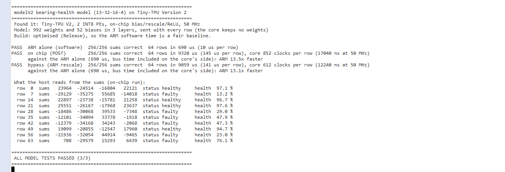
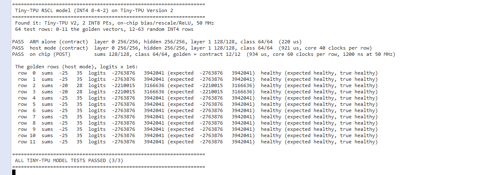
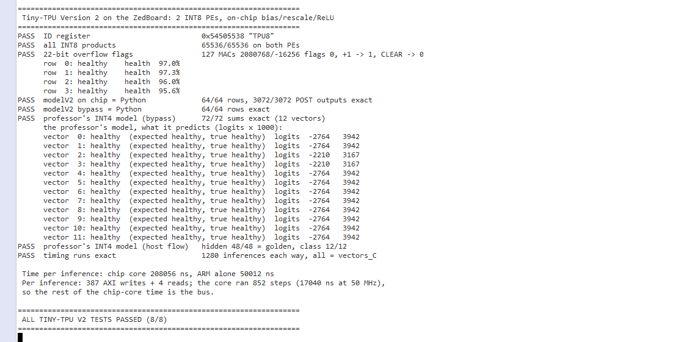
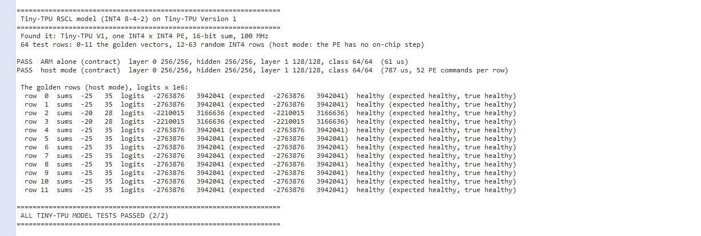
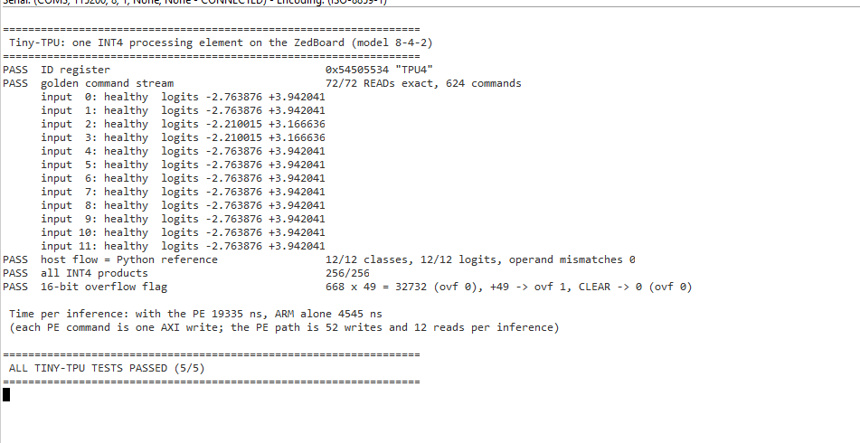

Document 15 ran modelV2 and the professor's Tiny-TPU RSCL model on the MAC Attack 8 × 8 accelerator. This document runs the same two models, the same test rows and the same checks on the Tiny-TPU chip RTL on the ZedBoard: Version 1, the professor's single INT4 processing element, and Version 2, the team's two-PE INT8 expansion. All five test programs passed on the board. Every sum, hidden value and prediction is identical to the software model, to the simulation and to the MAC Attack board run.
| Tiny-TPU Version 1 | Tiny-TPU Version 2 | MAC Attack (doc 15, for comparison) | |
|---|---|---|---|
| Folder | tinytpu/fpga_zed | tinytpu/fpga_zed_v2 | mac_attack_accel_MLP |
| Compute | 1 PE, INT4 × INT4, 16-bit sum | 2 PEs, INT8 × INT8, exact 22-bit sums | 8 × 8 systolic array, INT8, 22-bit sums |
| Between layers | Host does everything except multiply-adds | On chip: bias, rescale, ReLU (POST); or bypass to the host | On-chip MLP controller runs whole models |
| Weights kept | None: one MAC command per (input, weight) | None: the model is sent with every row | Up to 4 layers held on chip |
| Board clock | 100 MHz (WNS +0.997 ns) | 50 MHz (WNS +4.481 ns) | 214.286 MHz |
| Models | Tiny-TPU model (host mode) | Both models | Both models |
The core RTL in both FPGA builds is the same file that goes to Tiny Tapeout (chip/src/tiny_tpu_pe.v, chip_v2/src/tiny_tpu_v2_core.v). Only the AXI wrapper is FPGA-specific. The RTL was not changed for this work.
Before 16 Nov, both folders had only a Vivado script: no project, no bitstream and no built ARM program. They had been tested in simulation only (cocotb, Verilator). To get them onto the board:
create_…_project.tcl scripts passed each file path to add_files without wrapping it, so a folder name with a space (C:\Users\James Manikyan\…) split into two paths and the script stopped.model_v2_test (V2) and tinytpu_model_test (V1 and V2) use the same model files, rows and printout as MAC_model_V2 and MAC_model_TinyTPU, so the boards can be compared line by line. V2 also gained a shared driver (tpu_v2_driver.h), and its hardware test gained test 6b: the professor's full host flow with a printed prediction.sim/xsim_cosim/run_xsim_cosim.bat runs each board program unchanged against the RTL. All five passed there before the board run.build_bitstream.tcl, sdk_build.tcl and run_on_board.tcl in each folder; the board runs in this document used the SDK GUI (see the separate Vivado and SDK guide).model_v2_test, Release build| Test | Sums correct | 64 rows | Per row | Core clocks / row | Against the ARM |
|---|---|---|---|---|---|
| ARM alone (software) | 256/256 | 690 µs | 10 µs | – | baseline |
| On chip: hidden layers by POST | 256/256 | 9,320 µs | 145 µs | 852 (17.0 µs) | ARM 13.5× faster |
| Bypass: the ARM rescales | 256/256 | 9,059 µs | 141 µs | 612 (12.2 µs) | ARM 13.1× faster |
The printed predictions are identical to the MAC Attack board, sum for sum: row 0 healthy 97.1 %, row 7 faulty 13.2 %, row 28 faulty 29.0 %, row 49 healthy 94.7 %, row 63 faulty 76.1 % with sums 708, −29579, 15293, 6439. Document 15 maps these rows to their bearings.
tinytpu_model_test| Test | Result | 64 rows | Core clocks / row |
|---|---|---|---|
| ARM alone (professor's contract) | layer 0 256/256, hidden 256/256, layer 1 128/128, class 64/64 | 220 µs | – |
| Host mode (core sums, ARM float step) | layer 0 256/256, hidden 256/256, layer 1 128/128, class 64/64 | 921 µs | 40 |
| On chip (layer 0's step by POST) | sums 128/128, class 64/64, golden rows = contract 12/12 | 934 µs | 60 (1.2 µs) |
The 12 golden rows give the professor's logits to the last digit (row 0: −2763876 and 3942041 × 10−6), all "healthy" as expected.
tinytpu_v2_test| Test | Result |
|---|---|
| ID register | 0x54505538 "TPU8" |
| All INT8 products | 65,536/65,536 on both PEs |
| 22-bit overflow flags | 127 MACs give 2,080,768 / −16,256 with flags clear; +1 sets the flag; CLEAR clears it |
| modelV2 on chip = Python | 64/64 rows, 3,072/3,072 POST outputs exact |
| modelV2 bypass = Python | 64/64 rows exact |
| Professor's model, bypass | 72/72 sums exact (12 vectors) |
| Professor's model, host flow (test 6b) | hidden 48/48 = golden, class 12/12, all "healthy" |
| Timing runs | 1,280 inferences each way, all equal to the reference |
Per modelV2 inference: 387 AXI writes and 4 reads; the core ran 852 steps (17.0 µs at 50 MHz) of the 208 µs total, so the rest is the bus.
tinytpu_model_test| Test | Result | 64 rows |
|---|---|---|
| ARM alone (professor's contract) | layer 0 256/256, hidden 256/256, layer 1 128/128, class 64/64 | 61 µs |
| Host mode: every multiply-add on the PE (52 commands per row) | layer 0 256/256, hidden 256/256, layer 1 128/128, class 64/64 | 787 µs |
The golden rows' logits are identical to Version 2 and the MAC Attack board.
tinytpu_test| Test | Result |
|---|---|
| ID register | 0x54505534 "TPU4" |
| Golden command stream | 72/72 READs exact, 624 commands |
| Host flow = Python reference | 12/12 classes, 12/12 logits, 0 operand mismatches |
| All INT4 products | 256/256 |
| 16-bit overflow flag | 668 × 49 = 32,732 with the flag clear; +49 sets it; CLEAR clears it |
Per inference: 19.3 µs with the PE against 4.5 µs for the ARM alone (52 writes and 12 reads).
| Check | MAC Attack | Tiny-TPU V2 | Tiny-TPU V1 |
|---|---|---|---|
| modelV2 row 63 sums | 708 −29579 15293 6439 | 708 −29579 15293 6439 | can't run |
| modelV2 row 63 prediction | faulty, 76.1 % | faulty, 76.1 % | – |
| Tiny-TPU golden row 0 logits (× 10−6) | −2763876 3942041 | −2763876 3942041 | −2763876 3942041 |
| Clock counts on the board equal the simulation | 474 / 642 / 1,986 · 268 / 100 / 79 | 852 / 612 · 60 / 40 | 52 PE commands per row |
Two small differences that are not errors. tinytpu_v2_test prints row 0's health as 97.0 %, while model_v2_test and the MAC Attack app print 97.1 %. The sums are identical. The hardware test uses the C library's exp(), while the other two use MAC_model_V2's fast sigmoid, which is within 0.3 %. Also, ARM-alone times differ between programs (for example 61 µs on V1 against 220 µs on V2 for the same contract code) because the builds differ: only model_v2_test prints that it is a Release build, and the others were probably built in Debug.
| modelV2, one row | Time | Note |
|---|---|---|
| MAC Attack, 64 rows per run | ≈ 2 µs | 127 µs for 64 rows, the bus included (doc 15) |
| ARM alone, Release | 10 µs | this run |
| Tiny-TPU V2 on chip | 145 µs | the core computes for 17 µs; the rest is 387 bus writes |
As expected, the ARM alone beats both Tiny-TPU boards. Neither keeps weights, so the whole model crosses the AXI bus for every row, and Version 1 even sends one bus write per multiply-add. On the Tiny Tapeout board the RP2040 host has the same structure, so the chip's value is in proving the arithmetic in silicon, not in speed. The speed design is the MAC Attack array, which keeps the weights on chip and runs 64 rows per run.
Next: commit the Tiny-TPU folders' new scripts and programs. Run Version 2 through the Tiny Tapeout GitHub build. Train the Tiny-TPU model on the real Ottawa recordings and rerun these tests with the new export.

model_v2_test: ALL MODEL TESTS PASSED (3/3)
tinytpu_model_test: ALL TINY-TPU MODEL TESTS PASSED (3/3)
tinytpu_v2_test: ALL TINY-TPU V2 TESTS PASSED (8/8)
tinytpu_model_test: ALL TINY-TPU MODEL TESTS PASSED (2/2)
tinytpu_test: ALL TINY-TPU TESTS PASSED (5/5)Sources: board output on the USB-UART (COM3, 115200 8N1), 16 Nov 2026, in supporting_tinytpu_board_run/. Timing results from each project's timing_summary.rpt. Simulation results in each folder's README. MAC Attack figures from document 15.